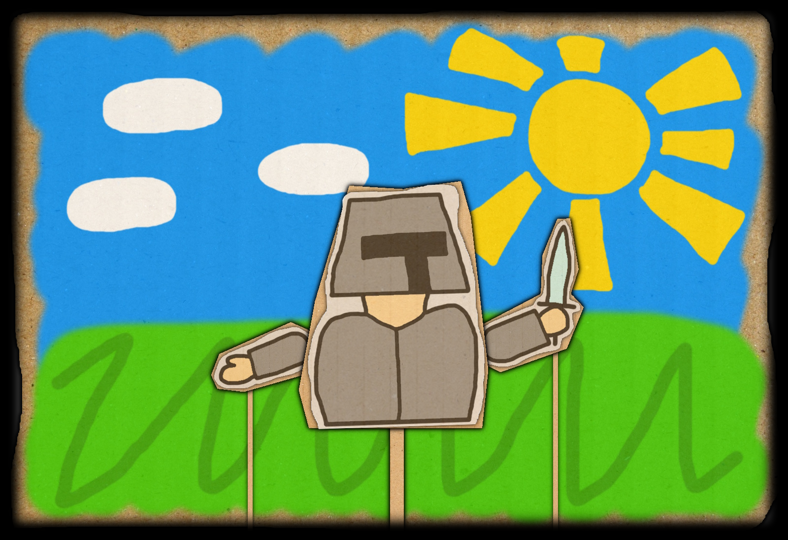

Когда с небес сойдут,
Герои, чьих имён не знаем мы,
Они на помощь к нам придут,
И защитят наш мир от тьмы.
По свиткам, что храним веками,
Известно, у них сильный дух.
Вдвоём, своими же руками
Убьют того, чей свет потух.
Очистив земли королевства,
От нечисти, что из болот встаёт,
Мечом закончат и те зверства,
Которые свободы лорд ведёт.
В союз вступив с самими небесами
Они пустыню обойдут.
И над песками став князцами,
На земли за стенами попадут.
Когда последний город зла
Будет разрушен их словами.
Руинам уж не будет и числа,
Ведь джунгли станут чёрными дровами.
Смотритель тьмы, что плёткой бьёт рабам по шеям,
В тяжёлой битве с силой света вступит там.
Отправься же к своим поганым холуям!
Ведь место лишь в могиле заготовано плутам!
В конце сего огромного пути,
Достигнув шпиля, что стремится к облакам,
Они увидят и того, кого найти
Немыслимо, он недоступен слабакам.
Лорд смерти, самый сильный враг,
С которым бой не будет лёгким никогда.
Он всё же угодил в конце в просак,
И жизнь его уж больно коротка.
Он будет мёртв и дело его проиграет.
Нам всем герои счастье возвратят.
Мы ждём, этих скрижалей миг настанет,
Когда текста легенд нас всех освободят.

Что скрывает за собой детский кукольный театр с книгами и картами?
Он скрывает в себе нашу жизнь.